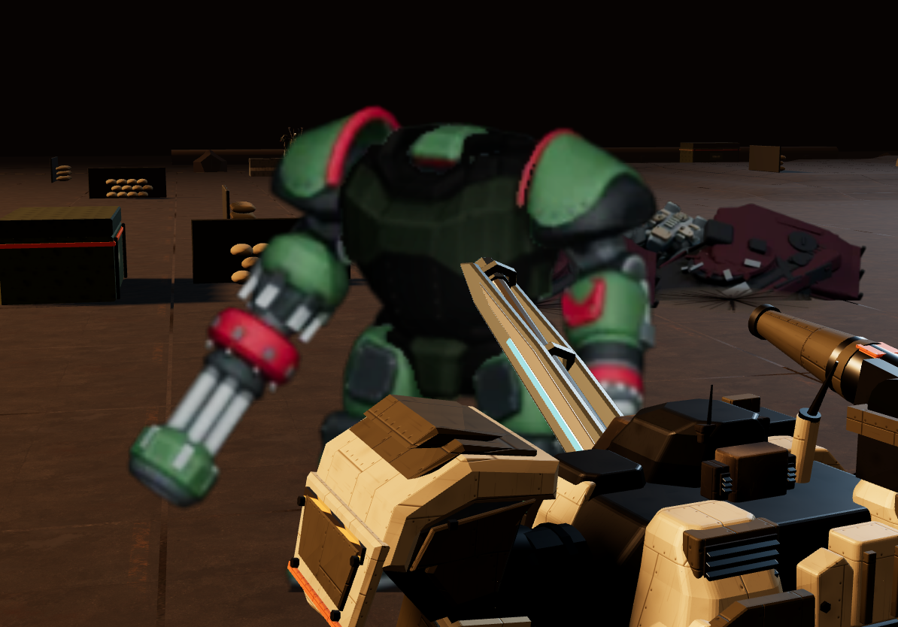

Seed4264, event361, ally1→enemy1; incoming Piledriver hit PILOT55→19. Final production fa9f835 / edac44e5, actual1194×834 DPR1 renderer canvas with UI excluded. Original shoulder camera crops actor; no full-body/joint/foot claim.

Different source tree622be7; exact source bytes retained in source/. See both manifests.